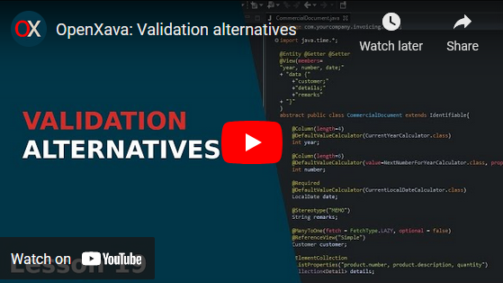

If you don't like videos follow the instructions below.
Validating with a JPA callback method
We're going to try another, maybe even simpler, way to do this validation, we'll transfer the validation logic from the validator class into the
Order entity itself, in this case in a
@PrePersist and
@PreUpdate method.
First, remove the
DeliveredToBeInInvoiceValidator class from your project. Then remove the
@EntityValidator annotation from your
Order entity:
//@EntityValidator( // Remove the '@EntityValidator' annotation
// value=com.yourcompany.invoicing.validators.DeliveredToBeInInvoiceValidator.class,
// properties= {
// @PropertyValue(name="year"),
// @PropertyValue(name="number"),
// @PropertyValue(name="invoice"),
// @PropertyValue(name="delivered")
// }
//)
public class Order extends CommercialDocument {
After that we're going to add the validation again, but now inside the
Order class itself. Add the
validate() method to your
Order class:
@PrePersist @PreUpdate // Just before creating or updating
private void validate() throws Exception {
if (invoice != null && !isDelivered()) { // The validation logic
// The validation exception from Bean Validation
throw new javax.validation.ValidationException(
XavaResources.getString(
"order_must_be_delivered",
getYear(),
getNumber()
)
);
}
}
Before saving an order this validation will be executed, if it fails a
ValidationException is thrown. This exception is from the
Bean Validation framework, so OpenXava knows that it is a validation exception. This way with only one method within your entity you have the validation done.
Only one @PrePersist method and one @PreUpdate method by entity are allowed, so before executing the above code you have to comment the @PrePersiste and @PreUpdate annotations you have in recalculateDeliveryDays(), in this way:
// @PrePersist @PreUpdate // Comment these annotations
private void recalculateDeliveryDays() {
setDeliveryDays(getEstimatedDeliveryDays());
}
Don't worry, we'll uncomment these annotations later. Although JPA only allows one @PrePersist/@PreUpdate method you always can create a unique callback method and call all other methods from it, but not needed for our case, because we're not going to keep this validation style as definitive.
Now, try to add orders not delivered to an invoice and see the validation errors, like in our first example.
Validating in the setter
Another alternative to do your validation is to put the validation logic inside the setter method. That's a simple approach.
First, put back again the @PrePersist and @PreUpdate annotations in recalculateDeliveryDays(), also remove the validate() method from the Order entity:
@PrePersist @PreUpdate // Add back the callback annotations
private void recalculateDeliveryDays() {
setDeliveryDays(getEstimatedDeliveryDays());
}
// Remove the validate() method
// @PrePersist @PreUpdate // Just before creating or updating
// private void validate() throws Exception {
// if (invoice != null && !isDelivered()) { // The validation logic
// // The validation exception from Bean Validation
// throw new javax.validation.ValidationException(
// XavaResources.getString(
// "order_must_be_delivered",
// getYear(),
// getNumber()
// )
// );
// }
// }
Then add the next
setInvoice() setter method to
Order:
public void setInvoice(Invoice invoice) {
if (invoice != null && !isDelivered()) { // The validation logic
// The validation exception from Bean Validation
throw new javax.validation.ValidationException(
XavaResources.getString(
"order_must_be_delivered",
getYear(),
getNumber()
)
);
}
this.invoice = invoice; // The regular setter assignment
}
This works exactly the same way as the two other options. This is like the
@PrePersist/@PreUpdate alternative, only that it does not depend on JPA, it's a basic Java implementation.
Validating with Bean Validation
As a last option we are going to do the shortest one: The validation logic is put into a boolean method annotated with the
@AssertTrue Bean Validation annotation.
To implement this alternative first remove the
setInvoice() method:
// Remove the setter method
// public void setInvoice(Invoice invoice) {
// if (invoice != null && !isDelivered()) { // The validation logic
// // The validation exception from Bean Validation
// throw new javax.validation.ValidationException(
// XavaResources.getString(
// "order_must_be_delivered",
// getYear(),
// getNumber()
// )
// );
// }
// this.invoice = invoice; // The regular setter assignment
// }
Then add the
isDeliveredToBeInInvoice() method to your
Order entity:
@AssertTrue( // Before saving it asserts if this method returns true, if not it throws an exception
message="order_must_be_delivered" // Error message in case false
)
private boolean isDeliveredToBeInInvoice() {
return invoice == null || isDelivered(); // The validation logic
}
In previous forms of validation our error message was constructed using two arguments,
year and
number, which in our i18n file are represented by
{0}/{1} respectively. For the validation case with
@AssertTrue we can not pass these two arguments to construct our error message, but we can declare properties and qualified properties of the validated bean in the definition of the message, for that change in invoicing
-messages_en.properties the entry:
order_must_be_delivered=Order {0}/{1} must be delivered in order to be added to an Invoice
By:
order_must_be_delivered=Order {year}/{number} must be delivered in order to be added to an Invoice
Note as we change
{0}/{1} by
{year}/{number}. OpenXava will fill
{year}/{number} with values of
year and
number that has the
Order being updated and does not fulfill the condition of validation.
This is the simplest way to validate, because the method with the validation only has to be annotated. The Bean Validation is responsible for calling this method when saving takes place, and throws the corresponding
ValidationException if the validation does not succeed.
Summary
In this lesson you have learned several ways to do validation in an OpenXava application. In the next lesson you are going to learn how to validate on remove and with that you will have explored all of the types of validations.